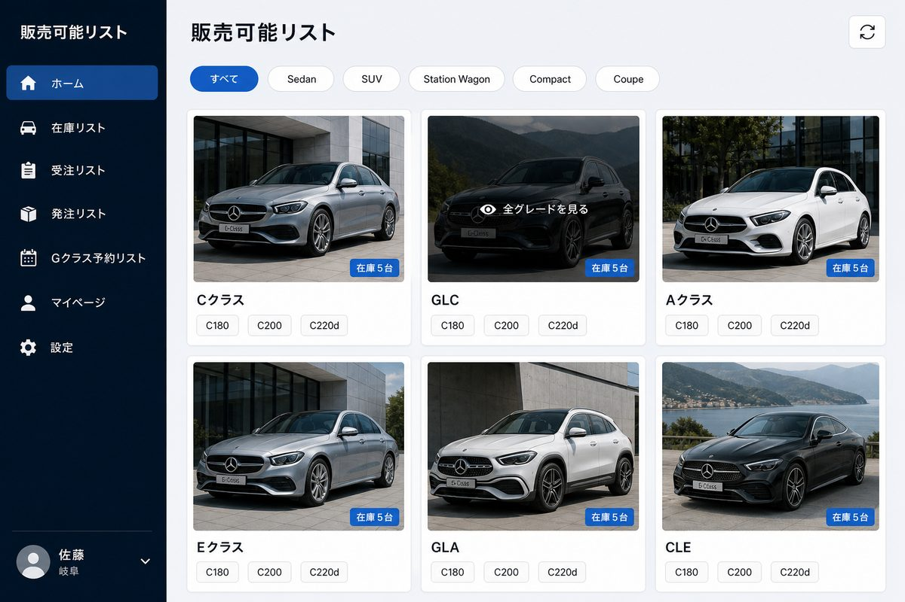
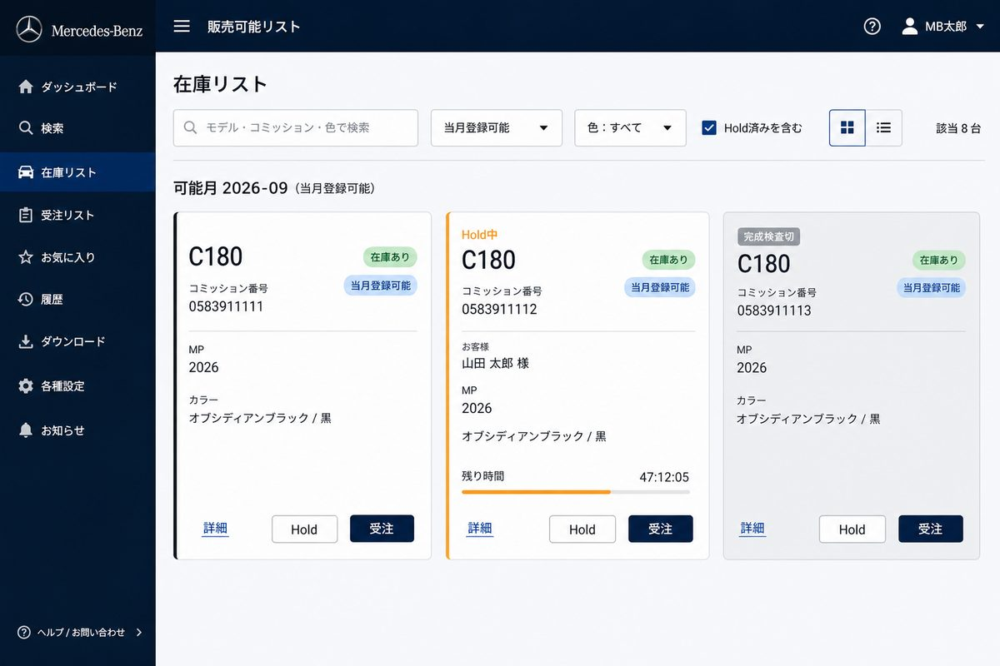
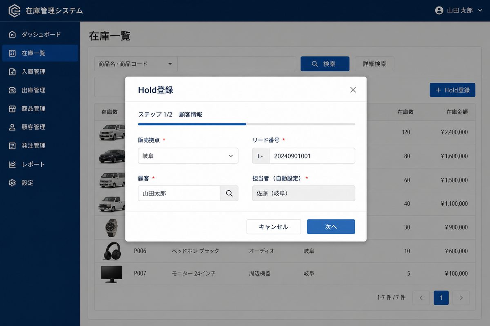
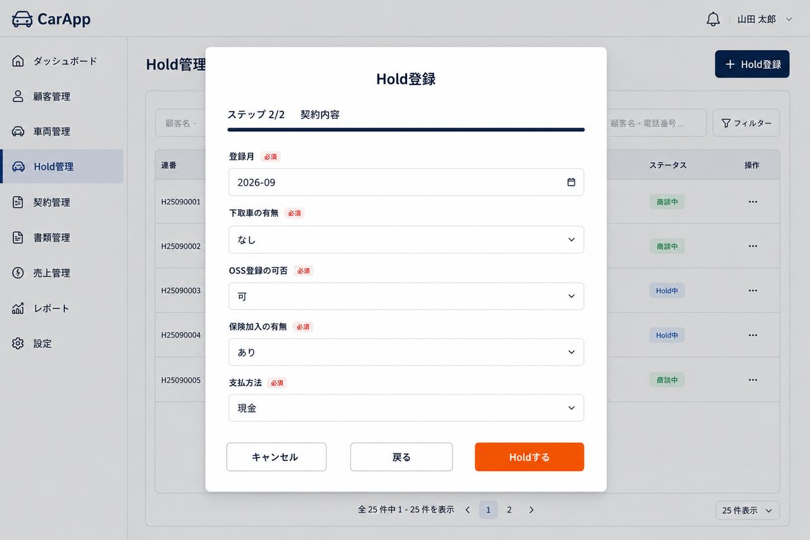
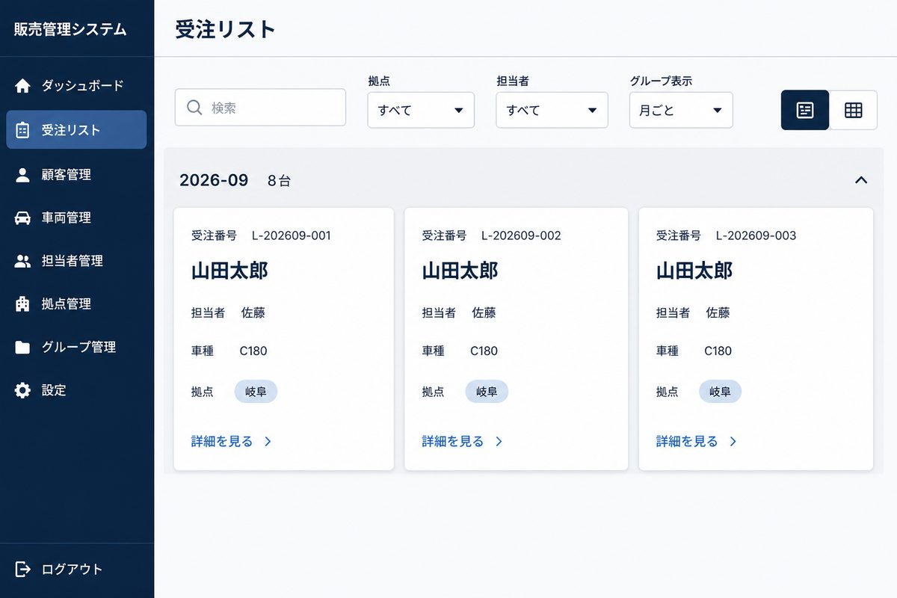
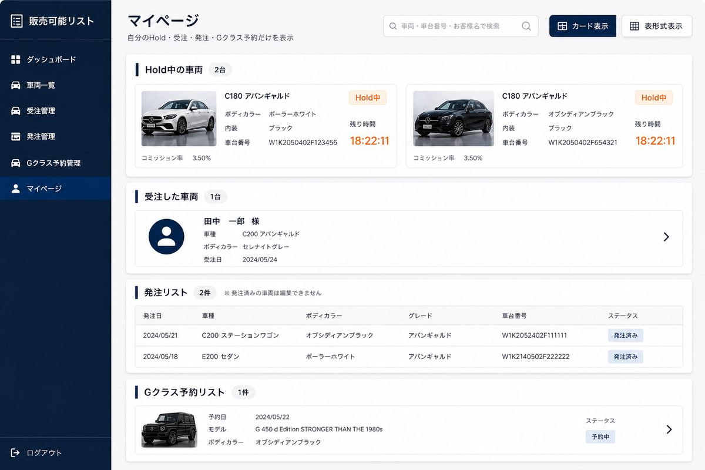
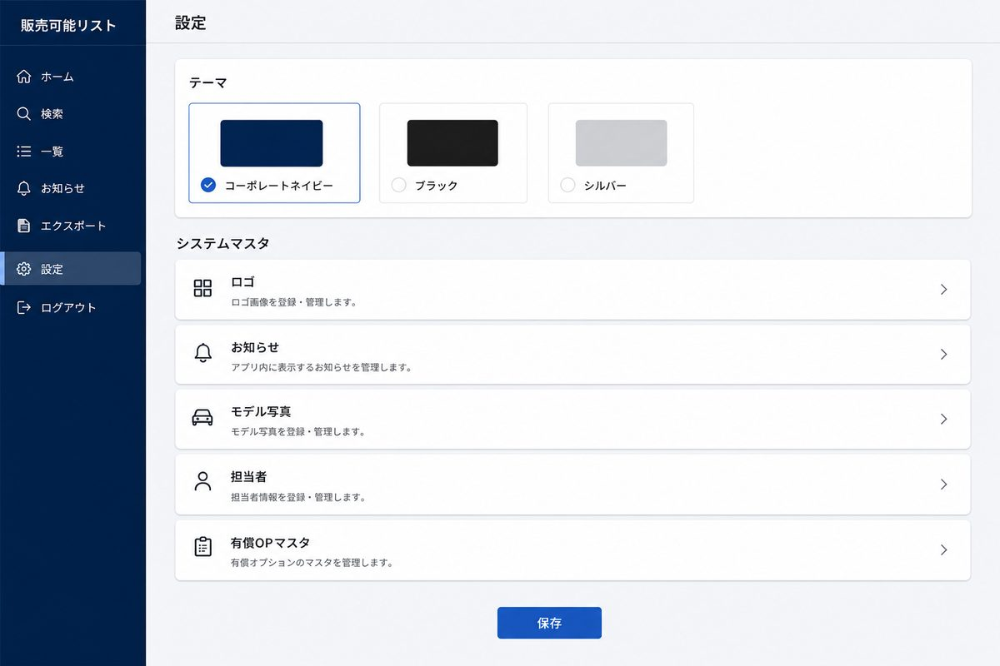
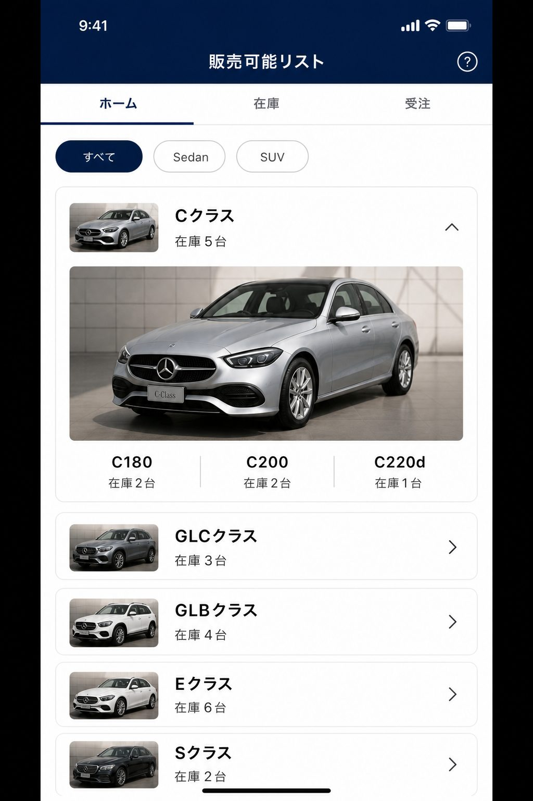

写真について掲載の画面は操作の案内用イメージです。実際の在庫台数・車種・担当者名は店舗の最新データに合わせて変わります。見た目の細部が実画面と少し違う場合がありますが、操作の流れは同じです。
1. はじめて使うとき
- 会社から案内されたアプリのURLを、Google Chrome などで開きます。
- 社用のGoogleアカウントでログインします。
- 左（パソコン）または上（スマホ）に自分の名前が出ていれば、そのまま使えます。
名前が出ない／操作できないとき担当者マスタに、ログイン中のメールアドレスがまだ登録されていません。Hold・受注・マイページは使えません。管理者に自分の氏名・メール・拠点を伝えて登録してもらってください。判定は表示名ではなくメールアドレスです。
右上（スマホ）または左下（パソコン）の更新ボタンで、最新の在庫に読み直せます。
2. 画面の見方
画面の切り替えは次の7つです。
| ホーム | モデル写真から在庫を探します。日常の出発点です。 |
|---|
| 在庫リスト | 1台ずつの在庫です。Hold・受注はここから行います。 |
|---|
| 受注リスト | 受注が確定した車両の一覧です。 |
|---|
| 発注リスト | 発注情報の閲覧専用です。アプリから登録・変更はできません。 |
|---|
| Gクラス予約リスト | Gクラス予約の閲覧専用です。 |
|---|
| マイページ | 自分のHold・受注・発注・Gクラスだけをまとめて見ます。 |
|---|
| 設定 | テーマ（配色）の変更。管理者はマスタも編集できます。 |
|---|
STEP 1ホームでモデルを選ぶ
STEP 2在庫リストで1台を確認
STEP 3Holdで72時間確保
STEP 4受注確定する
3. ホームでモデルを探す

図1 ホーム（パソコン）。写真をタップすると、そのモデルの全グレード在庫へ進みます。
- 上部のボディタイプ（すべて／Sedan／SUV など）でモデルを絞り込めます。
- カード右下の「在庫 ○台」は、そのモデルの販売可能台数です。
- 写真の下のグレード名（C180 など）をタップすると、そのグレードだけの在庫リストが開きます。
パソコンのとき
- 写真にマウスを乗せると「全グレードを見る」と出ます。
- 写真をタップ（クリック）すると、そのモデルの全グレードが在庫リストに表示されます。
スマホ・タブレットのとき
カードをタップすると、その場でグレード一覧が開きます。開きたいグレードを選んで在庫リストへ進みます。
4. 在庫リストで車両を探す

図2 在庫リスト。最初は「当月登録可能」で絞られています。左が通常在庫、中央がHold中、右が完成検査切のイメージです。
- ホームから来た直後は、選んだモデル（または全グレード）だけが見えます。
- 画面を開いたときの可能月は、当月登録可能です。すべての月を見るときはプルダウンを「すべて」にしてください。
- 検索欄はモデル名・コミッション・色で探せます。
- 色プルダウンで外装色を絞れます。
- 「Hold済みを含む」のチェックを外すと、Hold中の車両が消えます。
- カード表示と表表示は、右上の四角いボタンで切り替えられます。
- 車両は可能月のグループ（見出し）ごとに並びます。
ホームに戻るとき可能月の初期値は、もう一度「当月登録可能」に戻ります。
5. カードの色とバッジの意味
| 在庫あり |
いま Hold されていない販売可能車両です。左端の色は在庫の帯です。 |
| 当月登録可能 |
可能月が今月の車両です。過去月も当月登録可能として扱われます。 |
| Hold中 |
誰かが商談確保しています。残り時間がオレンジのバーで減っていきます（通常Holdは72時間）。 |
| 完成検査切 |
備考に「完成検査切」と入っている車両です。カード全体が灰色になります。左端のHold色はそのままです。 |
デモカーHOLD・他店HOLDは、通常のHoldと違い期限がありません（無期限）。管理者だけが登録できます。
6. 詳細・比較・有償OP
- 詳細を開くと、MP・ステア・外装／内装・有償OP・備考など1台分の情報が並びます。
- 有償OPのコードをタップすると、名称が表示されます（マスタに無いコードは「未登録」と出ます）。
- カードの「比較」にチェックすると、最大3台まで並べて見比べられます。画面下の比較バーから表を開きます。
7. Holdの取り方
商談中の車両を72時間確保するのが Hold です。確保できるのは1台につき2名まで（1st と 2nd）です。
本人確認担当者はログイン中のGoogleメールで自動セットされます。手入力では変えられません。
通常のHold（全担当者）
- 在庫カードの Hold をタップします。
- ステップ1「顧客情報」を入力して「次へ」。
- ステップ2「契約内容」を入力して「Holdする」。

図3 Hold登録 ステップ1（顧客情報）。担当者は自動表示です。リード番号は「L-」のあとに数字だけ入れます。
| 販売拠点 | 必須。自分の拠点が最初から入っています。必要なら直せます。 |
|---|
| リード番号 | 必須。「L-」は画面側についています。数字だけ入力してください。 |
|---|
| 顧客 | 必須。 |
|---|
| 担当者 | 自動。ログイン中の自分です。 |
|---|

図4 Hold登録 ステップ2（契約内容）。すべて必須です。「戻る」で顧客情報に戻れます。
| 登録月 | 必須。最初は今月が入っています。 |
|---|
| 下取車の有無 | 必須。 |
|---|
| OSS登録の可否 | 必須。 |
|---|
| 保険加入の有無 | 必須。 |
|---|
| 支払方法 | 必須。 |
|---|
登録が成功すると演出が表示され、マイページから内容を確認できます。Hold中のカードには残り時間が表示されます。
管理者だけのHold
管理者が「Hold」を押すと、先に種類を選べます。
- 通常のHOLD … 上と同じ（72時間）。
- デモカーHOLD … リード番号・登録月は任意。期限なし。
- 他店HOLD … 販売店は任意。期限なし。
8. 2nd Hold・Hold解除・受注確定
2nd Hold
- すでに1st Holdがある車両に、別の担当者が続けて確保できます。
- 1st Holdと同じ担当者（同じメール）は 2nd を取れません。
- 2nd の72時間は、1st の72時間が終わってから始まります。
- 1st が期限切れになると、2nd が自動で1stに上がります。
Hold解除
- 解除できるのは、そのHoldを登録した本人だけです（メールで判定）。
- 1st と 2nd はそれぞれ、登録した本人が解除します。
受注確定
- 在庫カード（またはマイページ）の 受注 をタップします。
- Hold中の車両は、入力内容がHold時の内容で埋まっています。必要なら直します。
- 登録月の初期値は「受注する今月」です（Holdした月ではありません）。
- 確定できるのは 1st Holdの本人 だけです。他人のHoldは確定できません。
- Holdしていない車両は、Holdせずに直接受注することもできます（顧客情報→契約内容の同じ2ステップ）。
確定後その車両は在庫リストから受注リストへ移ります。内容はマイページの「受注した車両」でも確認できます。
9. 受注リスト

図5 受注リスト。最初の並びは「月ごと」です。
- 検索はモデル・コミッション・顧客名・担当・拠点で行えます。
- 拠点・担当者で絞り込めます。
- グループ表示の初期値は 月ごと です。販売拠点ごと／モデルごと／グループなしにも変えられます。
- カード表示と表表示を切り替えられます。
10. 発注リスト・Gクラス予約リスト
どちらも見るだけの画面です。Hold や受注のボタンはありません。検索とカード／表の切り替えは使えます。
内容の追加・修正が必要なときは、管理者へ依頼してください。
11. マイページ

図6 マイページ。自分の案件だけが並びます。Holdの解除・受注確定もここからできます。
次の4つが、ログイン中の自分の分だけ表示されます。
- Hold中の車両
- 受注した車両
- 発注リスト（担当者名が自分と一致するもの）
- Gクラス予約リスト（担当者名が自分と一致するもの）
上部の検索は4つのセクション全部に効きます。カード／表の切り替えも一括です。
12. 設定

図7 設定。テーマは全員が変えられます。システムマスタは管理者だけです。
全員
表示設定でアプリとサイドバーの配色を選べます（11色＋ランダム）。自分の画面だけに効きます。
管理者限定（システムマスタ）
- ロゴ
- お知らせ（ホーム上部の文言）
- モデル写真（ホームのカード写真）
- 通知先（メール・Google Chat）
- 担当者（氏名・メール・拠点。Holdやマイページの本人判定に使います）
- 有償OPマスタ（コードと名称）
- Hold・受注確定の演出
担当者や有償OPの追加は、設定の該当カードから行います。一般の担当者にはこの欄は出ません。
13. スマートフォンでの操作

図8 スマホのホーム。カードを開いてグレードを選びます。画面上部のタブで画面を切り替えます。
- パソコンのような左メニューは出ません。画面上のタブ（ホーム／在庫リスト／…）を使います。
- ホームではカードをタップしてグレードを展開します。
- Hold・受注の入力は、パソコンと同じ2ステップです。入力欄は画面幅に合わせて並びます。
- ホーム画面に追加（PWA）できる場合があります。Googleサイトへ埋め込んだ表示では追加できないことがあります。
14. よくある質問
Holdボタンが押せない／エラーになる
担当者マスタ未登録、すでに2名がHoldしている、自分の1st Holdに対して2ndを取ろうとしている、のいずれかです。画面の赤いメッセージを確認してください。
他人のHoldを解除・受注できない
仕様です。解除はそのHoldの本人、受注確定は1st Holdの本人だけです。名前が似ていてもメールが違うと他人扱いになります。
残り時間が0になってもカードが残っている
期限切れの処理はサーバー側で定期的に走ります。数分待ってから更新ボタンを押してください。2nd がいる場合は、2nd が1stに繰り上がります。
コミッションの先頭0が消えて見えない
画面上は0付きで扱う想定です。おかしい数字を見つけたら管理者へ連絡してください。
有償OPをタップしても名称が出ない
有償OPマスタ未登録です。管理者にコードと正式名称を伝えて、設定の「有償OPマスタ」へ登録してもらってください。
ホームに写真が出ない
モデル写真が未登録です。管理者に設定の「モデル写真」への登録を依頼してください。
操作したのに画面が固まったように見える
ボタンは処理中表示になります。応答が遅い場合はエラーに戻ります。連打せず、表示が戻ってからやり直してください。更新ボタンで最新状態を取り直せます。